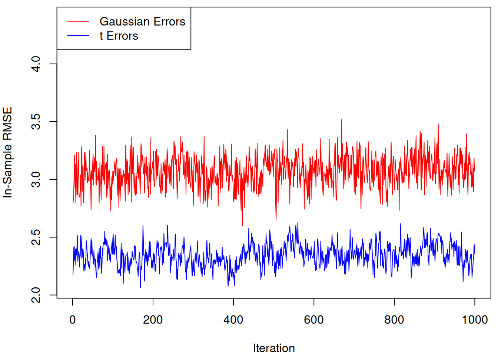
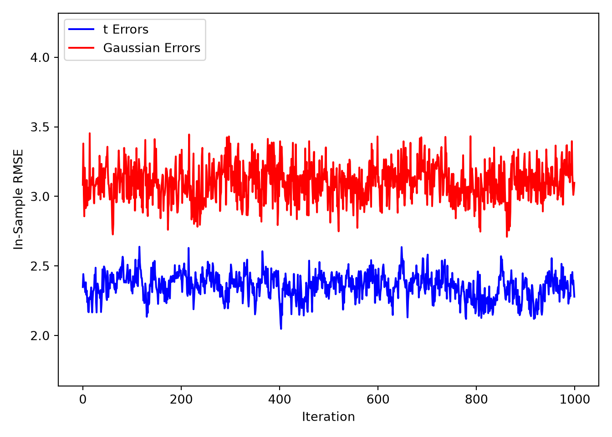
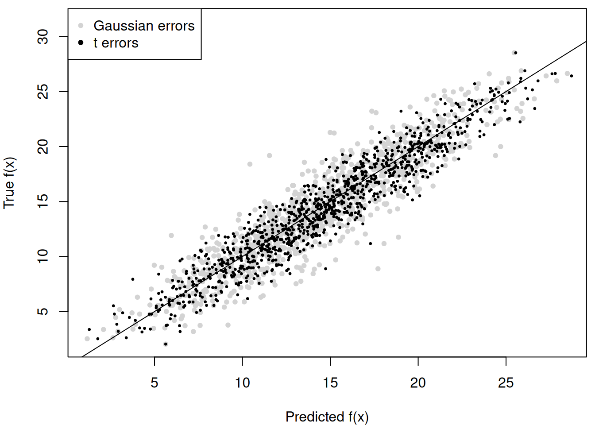
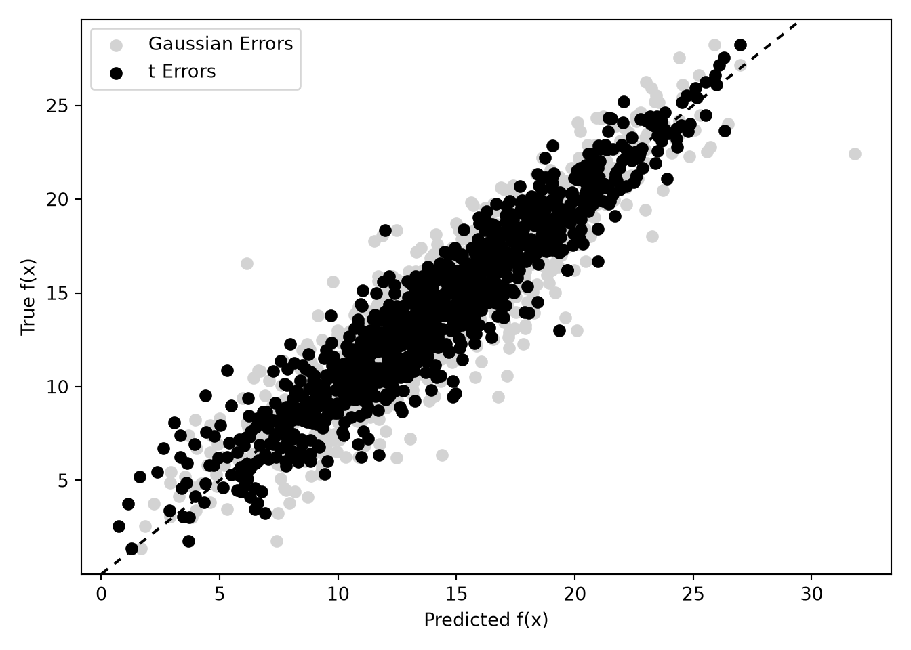

library(stochtree)Building a Custom Gibbs Sampler with Stochtree Primitives
While the functions bart() and bcf() provide simple and performant interfaces for supervised learning / causal inference, stochtree also offers access to many of the “low-level” data structures that are typically implemented in C++. This low-level interface is not designed for performance or even simplicity — rather the intent is to provide a “prototype” interface to the C++ code that doesn’t require modifying any C++.
Motivation
To illustrate when such a prototype interface might be useful, consider the classic BART algorithm
Input: \(y\), \(X\), \(\tau\), \(\nu\), \(\lambda\), \(\alpha\), \(\beta\)
Output: \(mc\) samples of a decision forest with \(m\) trees and global variance parameter \(\sigma^2\)
Initialize \(\sigma^2\) via a default or a data-dependent calibration exercise
Initialize a forest with \(m\) trees with a single root node, referring to tree \(j\)’s prediction vector as \(f_{j}\)
Compute residual as \(r = y - \sum_{j=1}^k f_{j}\)
For \(i\) in \(\left\{1,\dots,mc\right\}\):
For \(j\) in \(\left\{1,\dots,m\right\}\):
Add predictions for tree \(j\) to residual: \(r = r + f_{j}\)
Sample tree \(j\) of forest \(i\) from \(p\left(\mathcal{T}_{i,j} \mid r, \sigma^2\right)\)
Sample tree \(j\)’s leaf parameters from \(p\left(\theta_{i,j} \mid \mathcal{T}_{i,j}, r, \sigma^2\right)\) and update \(f_j\) accordingly
Update residual by removing tree \(j\)’s predictions: \(r = r - f_{j}\)
Sample \(\sigma^2\) from \(p\left(\sigma^2 \mid r\right)\)
Return each of the forests and \(\sigma^2\) draws
This algorithm is implemented in stochtree via the bart() R function or the BARTModel python class, but the low-level interface allows you to customize this loop.
In this vignette, we will demonstrate how to use this interface to fit a modified BART model in which the global error variance is modeled as \(t\)-distributed rather than Gaussian.
Setup
import numpy as np
import matplotlib.pyplot as plt
from stochtree import (
RNG, Dataset, Forest, ForestContainer, ForestSampler,
GlobalVarianceModel, LeafVarianceModel, Residual,
ForestModelConfig, GlobalModelConfig,
)Set seed for reproducibility
random_seed <- 1234
set.seed(random_seed)random_seed = 1234
rng = np.random.default_rng(random_seed)Data Generation and Preparation
Consider a modified version of the “Friedman dataset” (Friedman (1991)) with heavy-tailed errors
\[ \begin{aligned} Y_i \mid X_i = x_i &\overset{\text{iid}}{\sim} t_{\nu}\left(f(x_i), \sigma^2\right),\\ f(x) &= 10 \sin \left(\pi x_1 x_2\right) + 20 (x_3 - 1/2)^2 + 10 x_4 + 5 x_5,\\ X_1, \dots, X_p &\overset{\text{iid}}{\sim} \text{U}\left(0,1\right), \end{aligned} \]
where \(t_{\nu}(\mu,\sigma^2)\) represented a generalized \(t\) distribution with location \(\mu\), scale \(\sigma^2\) and \(\nu\) degrees of freedom.
We simulate from this dataset below
n <- 1000
p <- 20
X <- matrix(runif(n * p), ncol = p)
m_x <- (10 *
sin(pi * X[, 1] * X[, 2]) +
20 * (X[, 3] - 0.5)^2 +
10 * X[, 4] +
5 * X[, 5])
sigma2 <- 9
nu <- 2
eps <- rt(n, df = nu) * sqrt(sigma2)
y <- m_x + eps
sigma2_true <- var(eps)n = 1000
p = 20
X = rng.uniform(low=0.0, high=1.0, size=(n, p))
m_x = (
10 * np.sin(np.pi * X[:, 0] * X[:, 1])
+ 20 * np.power(X[:, 2] - 0.5, 2.0)
+ 10 * X[:, 3]
+ 5 * X[:, 4]
)
sigma2 = 9
nu = 2
eps = rng.standard_t(df=nu, size=n) * np.sqrt(sigma2)
y = m_x + eps
sigma2_true = np.var(eps)And we pre-standardize the outcome
y_bar <- mean(y)
y_std <- sd(y)
y_standardized <- (y - y_bar) / y_stdy_bar = np.mean(y)
y_std = np.std(y)
y_standardized = (y - y_bar) / y_stdSampling
We can obtain \(t\)-distributed errors by augmenting the basic BART model with a further prior on the individual variances: \[ \begin{aligned} Y_i \mid (X_i = x_i) &\overset{\text{iid}}{\sim} \mathrm{N}(f(x_i), \phi_i),\\ \phi_i &\overset{\text{iid}}{\sim} \text{IG}\left(\frac{\nu}{2}, \frac{\nu\sigma^2}{2}\right),\\ f &\sim \mathrm{BART}(\alpha,\beta,m). \end{aligned} \] Any Gamma prior on \(\sigma^2\) ensures conditional conjugacy, though for simplicity’s sake we use a log-uniform prior \(\sigma^2\propto 1 / \sigma^2\). In the implementation below, we sample from a “parameter-expanded” variant of this model discussed in Section 12.1 of Gelman et al. (2013), which possesses favorable convergence properties. \[ \begin{aligned} Y_i \mid (X_i = x_i) &\overset{\text{iid}}{\sim} \mathrm{N}(f(x_i), a^2\phi_i),\\ \phi_i &\overset{\text{iid}}{\sim} \text{IG}\left(\frac{\nu}{2}, \frac{\nu\tau^2}{2}\right),\\ a^2 &\propto 1/a^2,\\ \tau^2 &\propto 1/\tau^2,\\ f &\sim \mathrm{BART}(\alpha,\beta,m). \end{aligned} \]
Helper functions
We define several helper functions for Gibbs draws of each of the above parameters.
# Sample observation-specific variance parameters phi_i
sample_phi_i <- function(y, dataset, forest, a2, tau2, nu) {
n <- length(y)
yhat_forest <- forest$predict(dataset)
res <- y - yhat_forest
posterior_shape <- (nu + 1) / 2
posterior_scale <- (nu * tau2 + (res * res / a2)) / 2
return(1 / rgamma(n, posterior_shape, rate = posterior_scale))
}
# Sample variance parameter a^2
sample_a2 <- function(y, dataset, forest, phi_i) {
n <- length(y)
yhat_forest <- forest$predict(dataset)
res <- y - yhat_forest
posterior_shape <- n / 2
posterior_scale <- (1 / 2) * sum(res * res / phi_i)
return(1 / rgamma(1, posterior_shape, rate = posterior_scale))
}
# Sample variance parameter tau^2
sample_tau2 <- function(phi_i, nu) {
n <- length(phi_i)
posterior_shape <- nu * n / 2
posterior_scale <- (nu / 2) * sum(1 / phi_i)
return(1 / rgamma(1, posterior_shape, rate = posterior_scale))
}def sample_phi_i(
y: np.array,
dataset: Dataset,
forest: Forest,
a2: float,
tau2: float,
nu: float,
rng: np.random.Generator,
) -> np.array:
"""
Sample observation-specific variance parameters phi_i
"""
n = len(y)
yhat_forest = forest.predict(dataset)
res = y - yhat_forest
posterior_shape = (nu + 1) / 2
posterior_scale = (nu * tau2 + (res * res / a2)) / 2
return 1 / rng.gamma(shape=posterior_shape, scale=1 / posterior_scale, size=n)
def sample_a2(
y: np.array,
dataset: Dataset,
forest: Forest,
phi_i: np.array,
rng: np.random.Generator,
) -> float:
"""
Sample variance parameter a^2
"""
n = len(y)
yhat_forest = forest.predict(dataset)
res = y - yhat_forest
posterior_shape = n / 2
posterior_scale = (1 / 2) * np.sum(res * res / phi_i)
return 1 / rng.gamma(shape=posterior_shape, scale=1 / posterior_scale, size=1)[0]
def sample_tau2(phi_i: np.array, nu: float, rng: np.random.Generator) -> float:
"""
Sample variance parameter tau^2
"""
n = len(phi_i)
posterior_shape = nu * n / 2
posterior_scale = (nu / 2) * np.sum(1 / phi_i)
return 1 / rng.gamma(shape=posterior_shape, scale=1 / posterior_scale, size=1)[0]Sampling data structures
The underlying C++ codebase centers around a handful of objects and their interactions. We provide R and Python wrappers for these objects to enable greater customization of stochastic tree samplers than can be furnished by the high-level BART and BCF interfaces.
A “Forest Dataset” class manages covariates, bases, and variance weights used in a forest model, and contains methods for updating the underlying data as well as querying numeric attributes of the data (i.e. num_observations, num_covariates, has_basis, etc…). An Outcome / Residual class wraps the model outcome, which is updated in-place during sampling to reflect the full, or partial, residual net of mean forest or random effects predictions. A “Forest Samples” class is a container of sampled tree ensembles, essentially a very thin wrapper around a C++ std::vector of std::unique_ptr to Ensemble objects. A Forest class is a thin wrapper around Ensemble C++ objects, which is used as the “active forest” or “state” of the forest model during sampling. A “Forest Model” class maintains all of the “temporary” data structures used to sample a forest, and its sample_one_iteration() method performs one iteration of the requested forest sampling algorithm (i.e. Metropolis-Hastings or Grow-From-Root). Two different configuration objects (global and forest-specific) manage the parameters needed to run the samplers.
Writing a custom Gibbs sampler with one or more stochastic forest terms requires initializing each of these objects and then deploying them in a sampling loop.
First, we initialize the data objects with covariates and standardized outcomes
# Initial values of robust model parameters
tau2_init <- 1.
a2_init <- 1.
sigma2_init <- 1.
phi_i_init <- rep(1., n)
# Initialize data objects
forest_dataset <- createForestDataset(X, variance_weights = 1 / phi_i_init)
outcome <- createOutcome(y_standardized)# Initial values of robust model parameters
tau2_init = 1.0
a2_init = 1.0
sigma2_init = tau2_init * a2_init
phi_i_init = np.repeat(1.0, n)
# Initialize data objects
forest_dataset = Dataset()
forest_dataset.add_covariates(X)
forest_dataset.add_variance_weights(1.0 / phi_i_init)
residual = Residual(y_standardized)Next, we initialize random number generator objects, which are essentially wrappers around std::mt19937, which can optionally be seeded for reproducibility.
rng <- createCppRNG(random_seed)cpp_rng = RNG(random_seed)Next, we initialize the configuration objects. Note that each config has default values so these parameters do not all need to be explicitly set.
# Set parameters
outcome_model_type <- 0
leaf_dimension <- 1
num_trees <- 200
feature_types <- as.integer(rep(0, p)) # 0 = numeric
variable_weights <- rep(1 / p, p)
# Initialize config objects
forest_model_config <- createForestModelConfig(
feature_types = feature_types,
num_trees = num_trees,
min_samples_leaf = 5,
num_features = p,
num_observations = n,
variable_weights = variable_weights,
leaf_dimension = leaf_dimension,
leaf_model_type = outcome_model_type
)
global_model_config <- createGlobalModelConfig(
global_error_variance = sigma2_init
)# Set parameters
outcome_model_type = 0
leaf_dimension = 1
num_trees = 200
feature_types = np.repeat(0, p).astype(int) # 0 = numeric
var_weights = np.repeat(1 / p, p)
# Initialize config objects
forest_model_config = ForestModelConfig(
feature_types=feature_types,
num_trees=num_trees,
num_features=p,
num_observations=n,
variable_weights=var_weights,
leaf_dimension=leaf_dimension,
leaf_model_type=outcome_model_type,
)
global_model_config = GlobalModelConfig(global_error_variance=sigma2_init)Next, we initialize forest model / sampler objects which dispatch the sampling algorithms
forest_model <- createForestModel(forest_dataset, forest_model_config, global_model_config)forest_sampler = ForestSampler(
forest_dataset,
global_model_config,
forest_model_config
)Initialize both the (empty) container of retained forest samples and the “active forest.”
We set the leaf node values for every (single-node) tree in the active forest so that they sum to the mean of the scaled outcome (which is 0 since it was centered).
# Create forest container and active forest
forest_samples <- createForestSamples(num_trees, 1, T)
active_forest <- createForest(num_trees, 1, T)
# Initialize the leaves of each tree in the active forest
leaf_init <- mean(y_standardized)
active_forest$prepare_for_sampler(
forest_dataset,
outcome,
forest_model,
outcome_model_type,
leaf_init
)# Create forest container and active forest
forest_container = ForestContainer(num_trees, leaf_dimension, True, False)
active_forest = Forest(num_trees, leaf_dimension, True, False)
# Initialize the leaves of each tree in the active forest
leaf_init = np.mean(y_standardized, keepdims=True)
forest_sampler.prepare_for_sampler(
forest_dataset,
residual,
active_forest,
outcome_model_type,
leaf_init,
)We prepare to run the sampler by initialize empty containers for all of the parametric components of the model (and other intermediate values we track such as RMSE and predicted values).
num_burnin <- 3000
num_mcmc <- 1000
sigma2_samples <- rep(NA, num_mcmc)
a2_samples <- rep(NA, num_mcmc)
tau2_samples <- rep(NA, num_mcmc)
phi_i_samples <- matrix(NA, n, num_mcmc)
rmse_samples <- rep(0, num_mcmc)
fhat_samples <- matrix(0, n, num_mcmc)
current_sigma2 <- sigma2_init
current_a2 <- a2_init
current_tau2 <- tau2_init
current_phi_i <- phi_i_initnum_burnin = 3000
num_mcmc = 1000
sigma2_samples = np.empty(num_mcmc)
a2_samples = np.empty(num_mcmc)
tau2_samples = np.empty(num_mcmc)
phi_i_samples = np.empty((n, num_mcmc))
rmse_samples = np.empty(num_mcmc)
fhat_samples = np.empty((n, num_mcmc))
current_sigma2 = sigma2_init
current_a2 = a2_init
current_tau2 = tau2_init
current_phi_i = phi_i_initRun an MCMC sampler
for (i in 1:(num_burnin + num_mcmc)) {
keep_sample <- i > num_burnin
# Sample forest
forest_model$sample_one_iteration(
forest_dataset,
outcome,
forest_samples,
active_forest,
rng,
forest_model_config,
global_model_config,
keep_forest = keep_sample,
gfr = F,
num_threads = 1
)
# Sample local variance parameters
current_phi_i <- sample_phi_i(
y_standardized,
forest_dataset,
active_forest,
current_a2,
current_tau2,
nu
)
# Sample a2
current_a2 <- sample_a2(
y_standardized,
forest_dataset,
active_forest,
current_phi_i
)
if (keep_sample) {
a2_samples[i - num_burnin] <- current_a2 * y_std^2
}
# Sample tau2
current_tau2 <- sample_tau2(current_phi_i, nu)
if (keep_sample) {
tau2_samples[i - num_burnin] <- current_tau2 * y_std^2
sigma2_samples[i - num_burnin] <- current_tau2 * current_a2 * y_std^2
}
# Update observation-specific variance weights
forest_dataset$update_variance_weights(current_phi_i * current_a2)
# Compute in-sample RMSE and cache mean function samples
if (keep_sample) {
yhat_forest <- active_forest$predict(forest_dataset) * y_std + y_bar
error <- (m_x - yhat_forest)
rmse_samples[i - num_burnin] <- sqrt(mean(error * error))
fhat_samples[, i - num_burnin] <- yhat_forest
}
}keep_sample = False
for i in range(num_burnin + num_mcmc):
if i >= num_burnin:
keep_sample = True
# Sample from the forest
forest_sampler.sample_one_iteration(
forest_container=forest_container,
forest=active_forest,
dataset=forest_dataset,
residual=residual,
rng=cpp_rng,
global_config=global_model_config,
forest_config=forest_model_config,
keep_forest=keep_sample,
gfr=False,
num_threads=1
)
# Sample local variance parameters
current_phi_i = sample_phi_i(
y_standardized,
forest_dataset,
active_forest,
current_a2,
current_tau2,
nu,
rng,
)
# Sample a2
current_a2 = sample_a2(
y_standardized,
forest_dataset,
active_forest,
current_phi_i,
rng,
)
# Sample tau2
current_tau2 = sample_tau2(current_phi_i, nu, rng)
if keep_sample:
tau2_samples[i - num_burnin] = current_tau2 * y_std * y_std
sigma2_samples[i - num_burnin] = current_tau2 * current_a2 * y_std * y_std
# Update observation-specific variance weights
forest_dataset.update_variance_weights(current_phi_i * current_a2)
# Compute in-sample RMSE and cache mean function samples
if keep_sample:
yhat_forest = active_forest.predict(forest_dataset) * y_std + y_bar
error = m_x - yhat_forest
rmse_samples[i - num_burnin] = np.sqrt(np.mean(error * error))
fhat_samples[:, i - num_burnin] = yhat_forestCompute posterior mean of the conditional expectations for the non-robust model
m_x_hat_posterior_mean <- rowMeans(fhat_samples)m_x_hat_posterior_mean = np.mean(fhat_samples, axis=1)For comparison, we run the same model without robust errors
# Initial value of global error variance parameter
sigma2_init <- 1.0
# Initialize data objects
forest_dataset <- createForestDataset(X)
outcome <- createOutcome(y_standardized)
# Random number generator (std::mt19937)
rng <- createCppRNG(random_seed)
# Model configuration
outcome_model_type <- 0
leaf_dimension <- 1
num_trees <- 200
feature_types <- as.integer(rep(0, p)) # 0 = numeric
variable_weights <- rep(1 / p, p)
forest_model_config <- createForestModelConfig(
feature_types = feature_types,
num_trees = num_trees,
num_features = p,
min_samples_leaf = 5,
num_observations = n,
variable_weights = variable_weights,
leaf_dimension = leaf_dimension,
leaf_model_type = outcome_model_type
)
global_model_config <- createGlobalModelConfig(
global_error_variance = sigma2_init
)
# Forest model object
forest_model <- createForestModel(
forest_dataset,
forest_model_config,
global_model_config
)
# "Active forest" (which gets updated by the sample) and
# container of forest samples (which is written to when
# a sample is not discarded due to burn-in / thinning)
forest_samples <- createForestSamples(num_trees, 1, T)
active_forest <- createForest(num_trees, 1, T)
# Initialize the leaves of each tree in the forest
leaf_init <- mean(y_standardized)
active_forest$prepare_for_sampler(
forest_dataset,
outcome,
forest_model,
outcome_model_type,
leaf_init
)
active_forest$adjust_residual(forest_dataset, outcome, forest_model, F, F)
# Prepare to run the sampler
global_var_samples <- rep(NA, num_mcmc)
rmse_samples_non_robust <- rep(0, num_mcmc)
fhat_samples_non_robust <- matrix(0, n, num_mcmc)
current_sigma2 <- sigma2_init
# Run the MCMC sampler
for (i in 1:(num_burnin + num_mcmc)) {
keep_sample <- i > num_burnin
# Sample forest
forest_model$sample_one_iteration(
forest_dataset,
outcome,
forest_samples,
active_forest,
rng,
forest_model_config,
global_model_config,
keep_forest = keep_sample,
gfr = F,
num_threads = 1
)
# Sample global error variance parameter
current_sigma2 <- sampleGlobalErrorVarianceOneIteration(
outcome,
forest_dataset,
rng,
1,
1
)
global_model_config$update_global_error_variance(current_sigma2)
if (keep_sample) {
global_var_samples[i - num_burnin] <- current_sigma2 * y_std^2
}
# Compute in-sample RMSE
if (keep_sample) {
yhat_forest <- active_forest$predict(forest_dataset) * y_std + y_bar
error <- (m_x - yhat_forest)
rmse_samples_non_robust[i - num_burnin] <- sqrt(mean(error * error))
fhat_samples_non_robust[, i - num_burnin] <- yhat_forest
}
}# Initial value of global error variance parameter
sigma2_init = 1.0
# Initialize data objects
forest_dataset = Dataset()
forest_dataset.add_covariates(X)
residual = Residual(y_standardized)
# Random number generator (std::mt19937)
cpp_rng = RNG(random_seed)
# Model configuration
outcome_model_type = 0
leaf_dimension = 1
num_trees = 200
feature_types = np.repeat(0, p).astype(int) # 0 = numeric
var_weights = np.repeat(1 / p, p)
global_model_config = GlobalModelConfig(global_error_variance=sigma2_init)
forest_model_config = ForestModelConfig(
feature_types=feature_types,
num_trees=num_trees,
num_features=p,
num_observations=n,
variable_weights=var_weights,
leaf_dimension=leaf_dimension,
leaf_model_type=outcome_model_type,
)
# Forest model object
forest_sampler = ForestSampler(forest_dataset, global_model_config, forest_model_config)
# "Active forest" (which gets updated by the sample) and
# container of forest samples (which is written to when
# a sample is not discarded due to burn-in / thinning)
active_forest = Forest(num_trees, leaf_dimension, True, False)
forest_container = ForestContainer(num_trees, leaf_dimension, True, False)
# Initialize the leaves of each tree in the mean forest
leaf_init = np.mean(y_standardized, keepdims=True)
forest_sampler.prepare_for_sampler(
forest_dataset,
residual,
active_forest,
outcome_model_type,
leaf_init,
)
# Global error variance model
global_var_model = GlobalVarianceModel()
# Prepare to run the sampler
num_burnin = 3000
num_mcmc = 1000
sigma2_samples_non_robust = np.empty(num_mcmc)
rmse_samples_non_robust = np.empty(num_mcmc)
fhat_samples_non_robust = np.empty((n, num_mcmc))
current_sigma2 = sigma2_init
# Run the MCMC sampler
keep_sample = False
for i in range(num_burnin + num_mcmc):
if i >= num_burnin:
keep_sample = True
# Sample from the forest
forest_sampler.sample_one_iteration(
forest_container=forest_container,
forest=active_forest,
dataset=forest_dataset,
residual=residual,
rng=cpp_rng,
global_config=global_model_config,
forest_config=forest_model_config,
keep_forest=keep_sample,
gfr=False,
num_threads=1
)
# Sample global variance parameter
current_sigma2 = global_var_model.sample_one_iteration(residual, cpp_rng, 1.0, 1.0)
global_model_config.update_global_error_variance(current_sigma2)
if keep_sample:
sigma2_samples_non_robust[i - num_burnin] = current_sigma2 * y_std * y_std
# Compute in-sample RMSE and cache mean function samples
if keep_sample:
yhat_forest = active_forest.predict(forest_dataset) * y_std + y_bar
error = m_x - yhat_forest
rmse_samples_non_robust[i - num_burnin] = np.sqrt(np.mean(error * error))
fhat_samples_non_robust[:, i - num_burnin] = yhat_forestResults
Plot RMSE samples side-by-side
par(mar = c(4, 4, 0.5, 0.5))
y_bounds <- range(c(rmse_samples, rmse_samples_non_robust))
y_bounds[2] <- y_bounds[2] * 1.25
plot(
rmse_samples,
type = "l",
col = "blue",
ylim = y_bounds,
ylab = "In-Sample RMSE",
xlab = "Iteration"
)
lines(rmse_samples_non_robust, col = "red")
legend(
"topleft",
legend = c("Gaussian Errors", "t Errors"),
col = c("red", "blue"),
lty = 1
)
y_bounds = (
np.min([rmse_samples, rmse_samples_non_robust]) * 0.8,
np.max([rmse_samples, rmse_samples_non_robust]) * 1.25,
)
plt.ylim(y_bounds)(1.6380565273939045, 4.317266595742069)plt.plot(rmse_samples, label="t Errors", color="blue")
plt.plot(
rmse_samples_non_robust,
label="Gaussian Errors",
color="red",
)
plt.ylabel("In-Sample RMSE")
plt.xlabel("Iteration")
plt.legend(loc="upper left")
plt.tight_layout()
plt.show()
Compute the posterior mean of conditional expectations for the non-robust model and compare to the robust model
m_x_hat_posterior_mean_non_robust <- rowMeans(fhat_samples_non_robust)
par(mar = c(4, 4, 0.5, 0.5))
y_bounds <- range(m_x)
y_bounds[2] <- y_bounds[2] * 1.1
plot(
m_x_hat_posterior_mean_non_robust,
m_x,
pch = 20,
col = 'lightgray',
xlab = 'Predicted f(x)',
ylab = 'True f(x)',
ylim = y_bounds
)
abline(0, 1)
points(m_x_hat_posterior_mean, m_x, pch = 20, cex = 0.5)
legend(
"topleft",
legend = c('Gaussian errors', 't errors'),
pch = c(20, 20),
col = c('lightgray', 'black')
)
m_x_hat_posterior_mean_non_robust = np.mean(fhat_samples_non_robust, axis=1)
margin = 0.05 * (np.max(m_x) - np.min(m_x))
y_bounds = (np.min(m_x) - margin, np.max(m_x) + margin)
plt.ylim(y_bounds)(0.008273388343600363, 29.577969135635456)plt.scatter(
m_x_hat_posterior_mean_non_robust, m_x, label="Gaussian Errors", color="lightgray"
)
plt.scatter(m_x_hat_posterior_mean, m_x, label="t Errors", color="black")
plt.axline((np.mean(m_x), np.mean(m_x)), slope=1, color="black", linestyle=(0, (3, 3)))
plt.ylabel("True f(x)")
plt.xlabel("Predicted f(x)")
plt.legend(loc="upper left")
plt.tight_layout()
References
Friedman, Jerome H. 1991. “Multivariate Adaptive Regression Splines.” The Annals of Statistics 19 (1): 1–67.
Gelman, Andrew, John B Carlin, Hal S Stern, David B Dunson, Aki Vehtari, and Donald B Rubin. 2013. Bayesian Data Analysis. Third. Chapman; Hall/CRC.